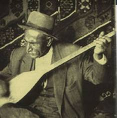
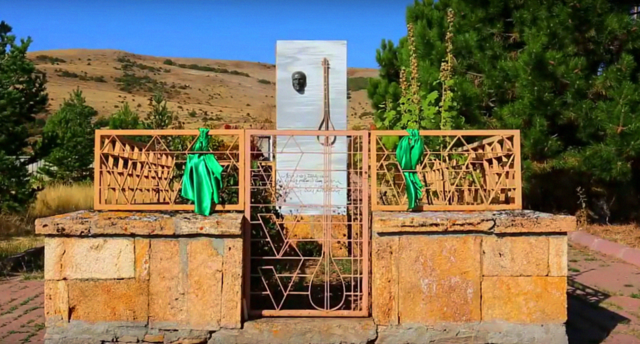

Şairler
Âşık Veysel
|  |
Âşık Veysel Şatıroğlu |
Doğum 25 Ekim 1894 |
Ölüm 21 Mart 1973 (78 yaşında) |
|  |
Âşık Veysel'in Şarkışla'nın
köyünde bulunan kabri |
Âşık Veysel, gerçek adıyla Veysel Şatıroğlu (25 Ekim 1894, Şarkışla - 21 Mart 1973, Sivas), Türk halk ozanı ve şair. Afşar boyunun Şatırlı obasına mensup olan Veysel Şatıroğlu, Gülizar ve Ahmet Şatıroğlu çiftinin çocuklarından biri olarak 25 Ekim 1894'te Sivas Vilayeti'nin Tenos (bugünkü Şarkışla) kazasında doğdu. Çocukken görme yetisini kaybetmesine rağmen şiirlerinde hoşgörü, sevgi, birlik ve beraberlik, vatanseverlik ve tabiat konularını işleyen Âşık Veysel; "Uzun İnce Bir Yoldayım", "Dostlar Beni Hatırlasın", "Kara Toprak" ve "Güzelliğin On Para Etmez" gibi birçok eser bıraktı. Türkiye'de âşıklık geleneğinin en önemli temsilcilerinden birisi olarak kabul gören Veysel, Türkçeyi en yalın ve güçlü şekilde kullanan isimlerden birisi olarak kabul edilmektedir.
Eserleri; aralarında Tarkan, Barış Manço, Gülden Karaböcek, Selda Bağcan, Haluk Levent, Belkıs Akkale ve Hümeyra gibi birçok sanatçı tarafından tekrar yorumlandı. Amerikalı elektrogitar virtüözü Joe Satriani, 2008'de çıkardığı albümde "Aşık Veysel" isimli kendi bestelediği enstrümantal bir esere yer verdi. Veysel, 2022 yılında "vefa" kategorisinde Cumhurbaşkanlığı Kültür ve Sanat Büyük Ödülüne'ne layık görüldü. Aralık 2022'de yayımlanan cumhurbaşkanlığı genelgesi ile ölümünün 50. yıl dönümü nedeniyle 2023 yılının Türkiye'de "Aşık Veysel Yılı" olarak kutlanacağı ilan edildi.
Hayatı
Âşık Veysel Şatıroğlu, 1894 yılında Sivas Vilayeti'nin Şarkışla ilçesine bağlı Sivrialan köyünde dünyaya geldi. Şatıroğlu'ndan önceki soyadı Ulu'dur. Annesi Gülizar, babası "Karaca" lakaplı Ahmet adında bir çiftçiydi. Veysel'in iki kız kardeşi, yörede yaygınlaşan çiçek hastalığına yakalanarak yaşamlarını yitirdi. Ardından Veysel de yedi yaşında aynı hastalıktan dolayı iki gözünü de kaybetti. Kendi anlatımına göre:
Çiçeğe yatmadan evvel anam güzel bir entari dikmişti. Onu giyerek beni çok seven Muhsine kadına göstermeye gitmiştim. Beni sevdi. O gün çamurlu bir gündü, eve dönerken ayağım kaydı ve düştüm. Bir daha kalkamadım. Çiçeğe yakalanmıştım... Çiçek zorlu geldi. Sol gözümde çiçek beyi çıktı. Sağ gözüme de, solun zorundan olacak, perde indi. O gün bugündür dünya başıma zindan.
Babasının, Âşık Veysel'e oyalanması için aldığı bağlamayla önce başka ozanların türkülerini çalmaya başladı. 1930 yılında Sivas Maarif Müdürü olarak görev yapan Ahmet Kutsi Tecer ile Kutsi Bey tarafından düzenlenen bir şairler gecesinde tanıştı. Kutsi Bey tarafından verilen destek ile birçok ili dolaşmaya başladı.
Âşık geleneğinin son büyük temsilcilerinden olan Âşık Veysel, bir dönem yurdu dolaşarak Köy Enstitüleri'nde saz hocalığı yaptı. 1965 yılında özel kanunla maaş bağlandı. 1970'li yıllarda Selda Bağcan, Gülden Karaböcek, Hümeyra, Fikret Kızılok ve Esin Afşar gibi bazı müzisyenler Âşık Veysel'in deyişlerini düzenleyerek yaygınlaşmasını sağladı. Âşık Veysel'in çocuklarından öğretmen olan Bahri Şatıroğlu, babasının yaşamını gün gün deftere almış ve pek çok çalışmaya kaynak kişi olarak katılmıştır. Ayrıca babasının saz ve söz geleneğini sürdürmektedir.
Eserlerinde Türkçesi yalındır. Dili ustalıkla kullanır. Yaşama sevinciyle hüzün, iyimserlikle umutsuzluk şiirlerinde iç içedir. Doğa, toplumsal olaylar, din ve siyasete ince eleştiriler yönelttiği şiirleri de vardır. Şiirleri, Deyişler (1944), Sazımdan Sesler (1950), Dostlar Beni Hatırlasın (1970) isimli kitaplarında toplandı. 1973 yılında akciğer kanseri sonucunda öldü. Ölümünden sonra Bütün Şiirleri (1984) adıyla eserleri tekrar yayınlandı.
Neşet Ertaş
 |
Neşet Ertaş |
Unvanı Bozkırın Tezenesi |
Doğum 1938 |
Ölüm 25 Eylül 2012 (74 yaşında) |
Neşet Ertaş (1938; Çiçekdağı, Kırşehir - 25 Eylül 2012; İzmir), Türk halk ozanı, Türkmen/Abdallık kültürünün ve müzik geleneğinin son büyük temsilcisidir. "Bozkırın Tezenesi" olarak da tanınır.
1950'li yıllardan itibaren yaptığı plaklarla, babası Muharrem Ertaş’tan öğrendiği türkü ve bozlakların yanı sıra Orta Anadolu türkülerini, oyun havalarını kayıt altına aldı. 1960'lı yıllardan itibaren kendi yazdığı şiirleri havalandırıp seslendirdi. "Garip" mahlasını kullandı. 1970'li yıllardan itibaren türküleri dönemin pek çok sanatçısı tarafından yorumlandı. 2009 yılında UNESCO'nun Yaşayan İnsan Hazinesi envanterine girmeye değer görüldü.
Hayatı
1938 yılında Kırşehir'e bağlı Çiçekdağı'nın Kelismailuşağı köyüne bağlı Kırtıllar mezrasında doğdu. Babası, Türkmen/Abdal müzik ve özellikle bozlak geleneğinin en güçlü temsilcisi olan Muharrem Ertaş, annesi Kırıkkale'nin Keskin ilçesinin Hacıaliobası köyünden Döne Ertaş'tır. Küçük yaştan itibaren babasıyla gittiği köy düğünlerinde zil ve darbuka çalarak mesleğe ilk adımını attı.
Sekiz yaşında ailesi ile birlikte Kırtıllar köyünden taşınarak İbikli köyüne yerleşti. 12 yaşındayken annesi Döne'yi kaybetti. Babası ve kardeşleri ile bir süre göçebe bir hayat yaşadı. Babası Muharrem Ertaş, Yozgat'ın Kırıksoku köyünden "Arzu" isminde bir hanımla ikinci evliliğini yaptı ve bir süre o köyde yaşadılar. Daha sonra Yozgat'ın Yerköy ilçesine yerleştiler. Sırasıyla Kırşehir, Çiçekdağı, Yozgat, Yerköy ve ardından iki yıl Kırıkkale'de yaşadılar.
Hiçbir zaman okula gidemeyen Neşet Ertaş bu dönemde kendi kendine önce keman, sonra cümbüş ve bağlama çalmayı öğrendi. Babası Muharrem Ertaş ile birlikte gittikleri yöre düğünlerinde cümbüş ve keman ile türküler çalıp okuyan Neşet Ertaş, sanatında en çok etkilendiği kişinin babası Muharrem Ertaş olduğunu söylemiştir: "Sanatımın yüzde doksanını babama borçluyum. Babamla ben aynı ruhun insanlarıyız."
Askerliğini 1962'de İzmir'in Narlıdere ilçesinde yaptı. Askerlik sonrası Ankara’da tanıştığı Tavşancı lakabıyla bilinen ünlü saz yapım ustası Hüseyin Koluman, Ertaş’ı önce saz dükkânına ortak yaptı sonra da tümüyle dükkânı devretti. Plaklardan ve radyodan tanıdığı Neşet Ertaş’la tanışmak için yanında kız arkadaşıyla saz dükkânına gelen Leyla isimli bu kız ile tanıştıktan kısa süre sonra evlendi. Yoksul bir ailenin kızı olan Bolulu Leyla ile tanışmaları ve evlenmeleri etrafında sahte ve gerçek dışı gazinolu, pavyonlu pek çok “anonim hikâye” uyduruldu. Gerçek olan, Babası Muharrem Ertaş’ın, kendisinin bilgisi dışında gerçekleştiği için bu evliliği tasvip etmediği idi. Sadece yedi yıl süren Leyla Ertaş ile evliliğinden Döne ve Canan adında iki kız, Hüseyin adında bir erkek çocukları oldu.
1969’da TRT sanatçılarından oluşan bir ekiple konser vermek ve plak doldurmak üzere gittiği Almanya dönüşünde Yugoslavya’da arabasıyla kaza yaptı. Ehliyetsiz otomobil kullanmaktan dolayı Yugoslavya’da 3 ay hapse mahkûm oldu. Türkiye'den hiç kimsenin arayıp sormadığı bu dönemde hapishaneye, “Bozkırın tezenesine geçmiş olsun” ibaresi yazılarak imzalanmış bir kitap geldi. Yazarı Yaşar Kemal olan bu kitabı yazarın kendisinin mi yoksa bir başkasının mı gönderdiği konusu, imza sahibini hatırlayamadığı için uzun zaman açıklığa kavuşmadı.
Neşet Ertaş, 1976 yılında özellikle sigara ve alkol kullanımına bağlı olarak aniden sahnede iken parmaklarından felç geçirdi. İki yıl süren fizik tedaviden sonuç alamadı ve işsiz kaldı. Almanya'da işçi olarak çalışan ağabeyi Necati Ertaş’ın desteği ile tedavi olmak için Almanya’ya gitti. Kısa süre sonra çocuklarını da yanına getirterek 1979-2003 yılları arasında Almanya'da kaldı. Önce Berlin'e, sonra Köln'e yerleşti. Avrupa ülkelerinde Türk işçilerin yoğun yaşadığı hemen hemen tüm şehirlerde konserler verdi, düğünlere gitti. Almanya yıllarında 20 civarında kaset çıkardı. Çoğunlukla söz ve müziği kendisine ait türküler, bozlaklar ve deyişler ile Orta Anadolu yöresine ait halay havaları ve oyun havaları seslendirdi. Seslendirdiği diğer eserler arasında genellikle, babası Muharrem Ertaş’tan duyduğu türkülerle söz ve müziği anonim olan çoğu Orta Anadolu yöresine ait türküler, oyun havaları ve halay ezgileri yer almaktadır.
2009 yılında Unesco Somut Olmayan Kültürel Mirasın Korunması Sözleşmesi kapsamında Türkiye Ulusal Envanteri’ne alınarak “Yaşayan İnsan Hazinesi” kabul edilen Ertaş’a, 25 Nisan 2011 tarihinde İTÜ Konseyi tarafından “Fahri Doktor” ünvanı verildi. Saz çalma tavrı ve tekniği, sesini kullanma ve türkü okuma üslubu, şair/ozan kimliği yanında havalandırdığı şiirlerinin edebî ve estetik değeri, repertuvarı, üniversite ve konservatuvarlarda ders ve tez konusu oldu.
25 Eylül 2012 tarihinde İzmir'de tedavi gördüğü Medical Park Hastanesinde mesane kanseri nedeniyle yaşamını yitirdi. Devlet adamlarının, iktidarı ve muhalefetiyle tüm siyasilerin, her kesimden ve her görüşten binlerce insanın katılımıyla Kırşehir Ahi Evran Camisi'nde kılınan cenaze namazı sonrası Bağbaşı Mezarlığı'nda, vasiyeti üzerine babası Muharrem Ertaş'ın mezarının ayak ucuna defnedildi. Mezar taşında Sakın ol ha insanoğlu/ İncitme canı incitme/ Her can bir kalp Hakk'a bağlı/ İncitme canı incitme yazılıdır.